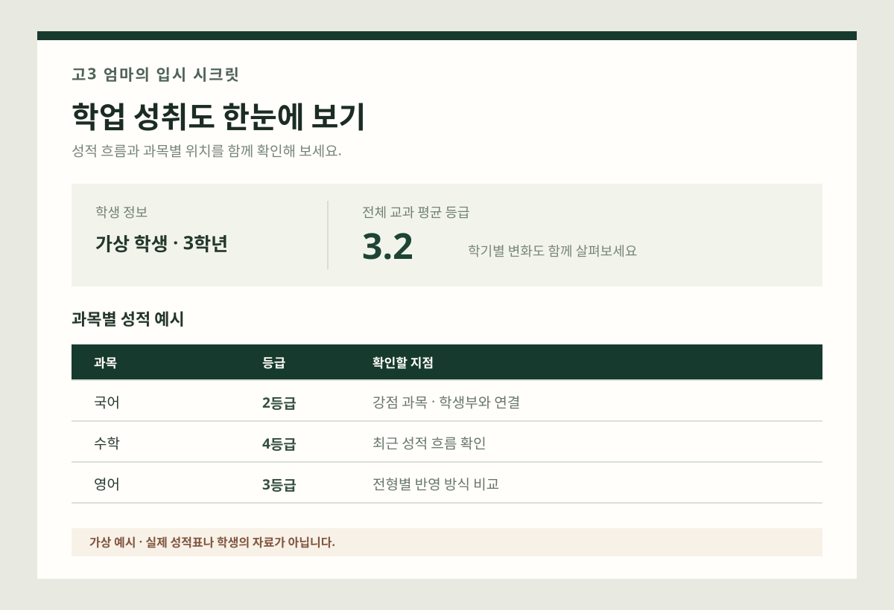

학생부 강점 진단
과목별 성취와 활동을 연결해 강점과 보완할 점을 정리합니다.
고3 엄마의 경험 + AI 맞춤 분석
내신 등급·성적 흐름·학생부를 함께 살펴
우리 아이 등급대에 맞는 전형과
탐구·면접 정보를 정리합니다.
등급만으로
가능성을 단정하지 않아요
모두에게 같은 답 대신
아이에게 맞는 선택지를
복잡한 입시를
오늘 할 일부터 차근차근
AI 맞춤 입시 정보
내신 등급과 성적 흐름, 학생부, 관심 전공을 함께 살펴 아이의 상황에 맞는 입시 정보를 정리합니다.
우리 아이 상담 문의하기과목별 성취와 활동을 연결해 강점과 보완할 점을 정리합니다.
교과·학종 등 전형별로 확인할 기준과 선택지를 비교합니다.
관심 전공과 기존 활동에서 이어갈 만한 탐구 방향을 제안합니다.
기록에 담긴 활동과 배움을 바탕으로 예상 질문을 정리합니다.
AI는 입시 정보를 정리하고 선택지를 살펴보는 보조 도구입니다. 합격을 보장하거나 최종 지원 결정을 대신하지 않습니다. 실제 AI 분석·자료 처리 기능은 별도 구현과 개인정보 보호 체계 마련 후 제공됩니다.
엄마가 먼저 겪어 정리한 입시 이야기
복잡한 전형과 흩어진 정보 속에서
우리 아이에게 필요한 것부터 차근차근 살펴봅니다.
내신 등급대와 성적의 흐름, 학생부의 강점을 함께 살펴 현재 위치를 입체적으로 정리합니다.
교과·학종 등 전형의 특징을 아이의 상황과 나란히 놓고, 우선 검토할 방향을 제안합니다.
탐구 주제부터 학생부 점검까지, 막연한 걱정을 실행할 수 있는 작은 계획으로 바꿉니다.
YOUR CHILD, THEIR OWN ROUTE
등급은 아이를 설명하는 전부가 아니라,
전략을 세우기 위한 첫 번째 단서입니다.

학생부의 결을 살펴 전형별 경쟁력을 비교하고, 유리한 조합을 검토합니다.
성적 추이와 활동의 연결성을 살펴, 아이만의 강점이 드러나는 방향을 찾습니다.
지원 자격과 전형 요소를 꼼꼼히 확인하고, 지금 보완할 수 있는 지점을 정리합니다.
* 등급 구간은 이해를 돕기 위한 참고 예시입니다. 실제 지원 가능성은 과목별 성적, 학교·전형, 학생부 내용 등 여러 요소에 따라 달라집니다.
고3 아이를 키우며 알게 된 것
무엇이 우리 아이에게 해당하는지, 지금 무엇부터 해야 하는지 알려주는 차분한 기준이 필요했습니다. 그때의 막막함을 기억하며, 성적과 학생부를 함께 살펴 현실적으로 선택할 수 있는 방향을 나눕니다.
고3 아이를 키우는 엄마, 드림 —
자주 묻는 질문
궁금한 점부터 편하게 확인해 보세요.
네. 현재 학년과 대략적인 등급대만으로도 먼저 이야기할 수 있어요. 학생부나 세부 성적 자료가 있다면 이후 더 구체적으로 살펴볼 수 있습니다.
서비스가 준비되면 내신 등급과 성적 흐름, 학생부, 관심 전공을 바탕으로 학생부 강점, 등급대별 전형, 탐구 주제와 면접 준비 정보를 정리합니다. 실제 분석 기능은 구현 및 개인정보 보호 체계 마련 후 제공됩니다.
합격을 보장하거나 최종 지원 결정을 대신하지 않습니다. 성적과 학생부를 바탕으로 검토할 선택지를 정리하고, 최신 모집요강과 학교별 기준을 함께 확인합니다.
상담 연락을 위해서만 사용하도록 구성했습니다. 현재 페이지는 이메일 작성 창을 열어 신청 내용을 보내는 방식이며, 실제 운영 전에는 연결할 상담 이메일과 개인정보 처리 안내를 확인해 주세요.
지금 궁금한 점부터 함께 살펴봅니다
연락처와 현재 고민을 남겨 주세요.
아이에게 맞는 방향을 함께 살펴보겠습니다.